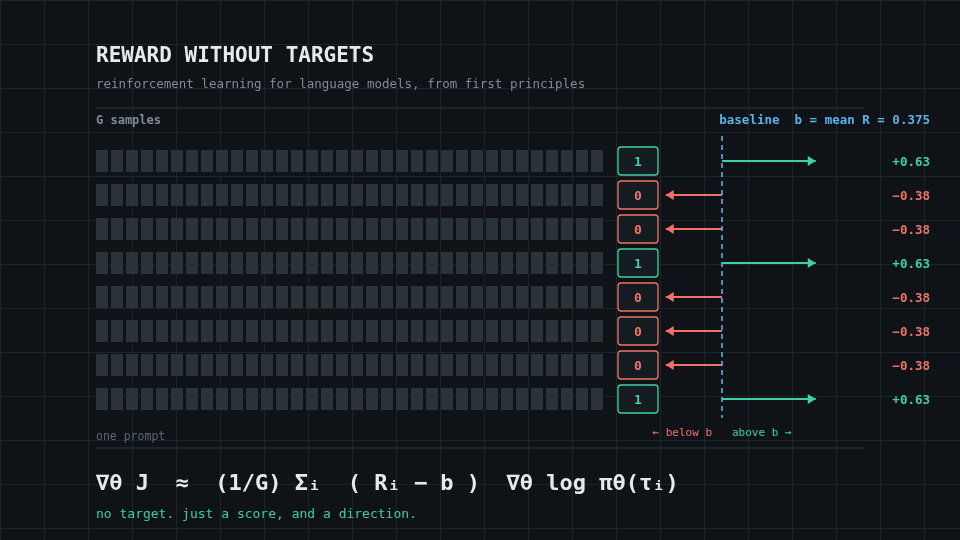
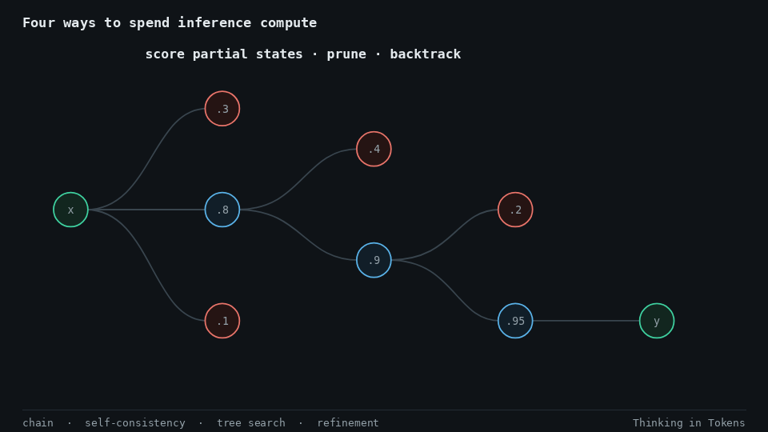
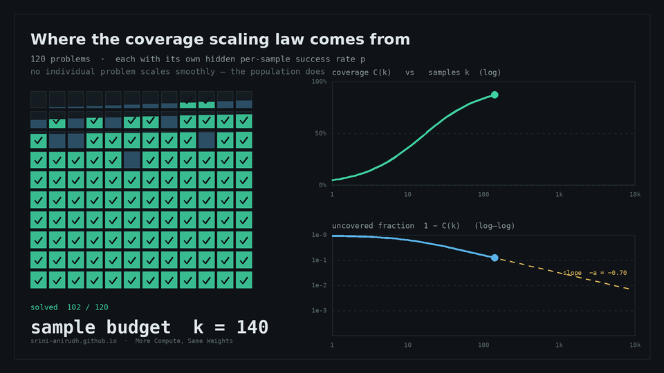
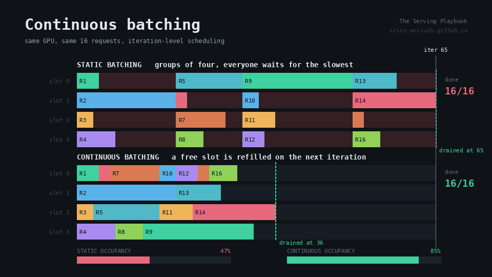
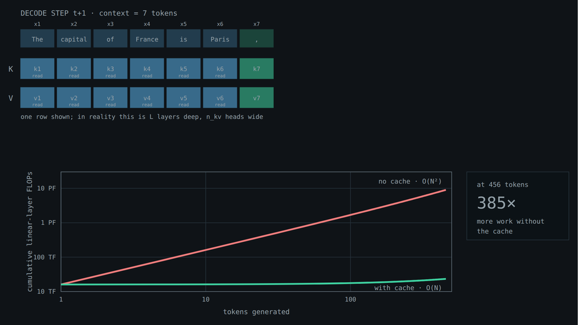
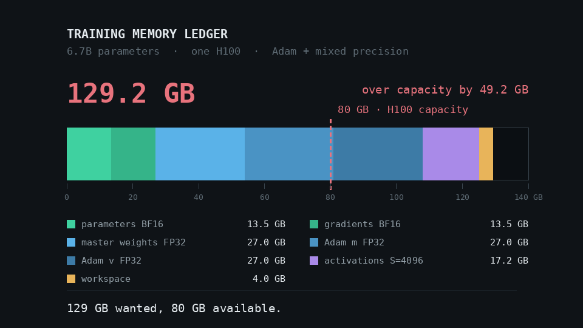
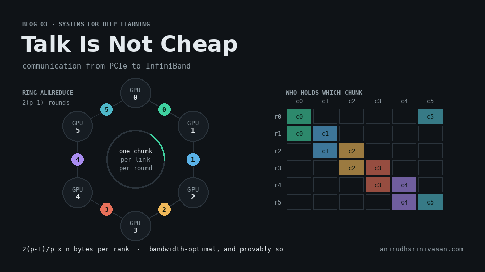

Animated Deepdives
Illustrated Notes
First-principles, illustrated deep dives into
how modern AI models are built, trained, and scaled.
Showing all 25 articles

The VLM Architecture Gallery
Seventy-one architectures on one standardized plate, from gated cross-attention to encoders absorbed into the base model.

Anatomy of a Modern LLM
What changed between the original Transformer and today’s Llama, Qwen, DeepSeek, and GLM-class models—one design pressure at a time.

Parameters, Tokens, Compute
Where C = 6ND comes from, why tokens per parameter is not a constant, and how to plan a large run from small experiments.

Reward Without Targets
Policy gradients, baselines, advantages, GAE, trust regions, and PPO derived first, then translated into language-model rollouts.

Teaching a Model What We Prefer
How comparisons become reward, why RLHF needs a KL leash, and how the same objective turns into DPO’s direct loss.

When Correctness Is the Reward
What changes when answers can be checked automatically: verifiers, GRPO, DeepSeek-R1, exploration, and the limits of short RL runs.

Thinking in Tokens
Why a familiar Transformer can buy serial compute by writing, what reasoning traces reveal, and when longer thought makes answers worse.

More Compute, Same Weights
Longer chains, more samples, search, and verifiers—plus why the best inference budget depends on the prompt rather than one global setting.

The Bottleneck Atlas
A practical method for reading timelines and counters, using PyTorch Profiler and Nsight, diagnosing Roofline regimes, and testing optimization hypotheses.

The Serving Playbook
Continuous batching, paged KV, prefix caching, chunked prefill, disaggregation, distributed serving, speculative decoding, and goodput under SLOs.

One Token at a Time
Why inference becomes a different machine: autoregression, prefill, decode, KV cache, batching, bandwidth, latency metrics, quantization, and multimodal workloads.

The Parallelism Playbook
The six things a training workload can split, from DDP and ZeRO/FSDP through tensor, pipeline, context, expert, and hybrid parallelism.

Inside a Training Step
A first-principles walkthrough of tensor shapes, forward and backward passes, FLOPs, activation lifetimes, optimizer states, memory accounting, and checkpointing.

Talk Is Not Cheap
What changes when data is no longer local: PCIe, NVLink, NVSwitch, RDMA, topology, collective communication, and overlap.

Bound by Bytes
Arithmetic intensity and the Roofline model derived from first principles, then applied to GEMM, attention, fusion, optimizers, and real ML kernels.

From Cores to Warps
Why CPUs and GPUs spend their transistor budgets differently—and how execution hierarchy, latency hiding, memory access, tiling, and Tensor Cores follow from that choice.

From Pixels to Visual Tokens
What changed in the visual half of VLMs: intake geometry, resolution, objectives, connectors, and the encoders models actually ship.

One Transformer, Two Modalities
A block-by-block comparison: tokenizing versus patchifying, lookup tables versus projections, positions, masks, and heads.

An Image Is a Sentence
How Vision Transformers see, from the first patch embedding through ViT, DeiT, PVT, Swin, video transformers, and the cost of attention.

Across the CNNVerse
Thirty years of convolutional architecture, from sliding-window arithmetic and receptive fields to ResNet, EfficientNet, and ConvNeXt.

Evolution of ML Architectures
Sixty-seven years of neural architectures, including how information moves, what training costs, what inference carries, and how gradients flow backward.

How Models Know Where They Are
Absolute, sinusoidal, relative, RoPE, NoPE, 2D and Fourier features, and multimodal M-RoPE—explained visually.

How Models Take a Step
A mechanical tour from SGD to Muon: how optimizers build an update, what their state costs, and where a training step stalls.

The Geometry of Normalization
Every normalization layer from BatchNorm to Peri-LN, plus why the modality interface in a VLM is a normalization problem.

The Activation Atlas
From sigmoid and ReLU to GELU, SwiGLU, and squared ReLU—with animated derivations and a map of what modern models use.